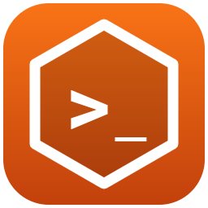
Rustzor.Cli
The rustzor command for Rustzor apps (C# Razor in the browser on RustNetRuntime): rustzor new, rustzor serve with live reload, rustzor publish, rustzor add, rustzor info.
dotnet tool install -g Rustzor.Cli --prereleaseC# Razor apps in the browser on RustNetRuntime, a .NET runtime written in Rust and compiled to WebAssembly. 45 packages at 0.1.0-preview.1; reference only what your app uses.
dotnet tool install -g Rustzor.Cli --prereleaserustzor new app MyAppcd MyApp && rustzor serveThe SDK, the component model, the UI kit and the tools.

The rustzor command for Rustzor apps (C# Razor in the browser on RustNetRuntime): rustzor new, rustzor serve with live reload, rustzor publish, rustzor add, rustzor info.
dotnet tool install -g Rustzor.Cli --prerelease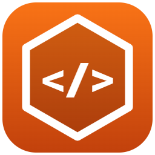
Rustzor components: a Blazor-compatible component model (ComponentBase, RenderTreeBuilder, EventCallback, @bind, routing, layouts, forms, DI) rendered by a virtual-DOM diff on RustNetRuntime in the browser. Write .razor files; no ASP.NET Core assemblies are needed.
dotnet add package Rustzor.Components --version 0.1.0-preview.1Rustzor core: the JavaScript bridge, callbacks, timers and a JSON reader/writer for C# running on RustNetRuntime in the browser.
dotnet add package Rustzor.Core --version 0.1.0-preview.1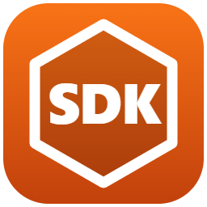
Rustzor SDK: build C# Razor apps that run in the browser on RustNetRuntime (Rust, compiled to WebAssembly). Use as <Project Sdk="Rustzor.Sdk/0.1.0-preview.1">. dotnet build produces a static site; -p:RustzorAot=true adds ahead-of-time WebAssembly.
<Project Sdk="Rustzor.Sdk/0.1.0-preview.1">Project templates for Rustzor: C# Razor apps that run in the browser on RustNetRuntime (Rust, compiled to WebAssembly). dotnet new rustzor, rustzor-empty, rustzorlib.
dotnet new install Rustzor.Templates::0.1.0-preview.1Rustzor.UI: a professional component kit for Rustzor apps — app shell, data grid, SVG charts, stat cards, modals, tabs, toasts, forms and icons, themed for light and dark.
dotnet add package Rustzor.UI --version 0.1.0-preview.1rustzor add uiOne package per browser API; an app downloads only the ones it references.
Rustzor.Browser.AI: the browser's AI API for C# on Rustzor (RustNetRuntime in WebAssembly).
dotnet add package Rustzor.Browser.AI --version 0.1.0-preview.1rustzor add builtin-ai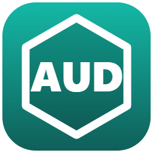
Rustzor.Browser.Audio: the browser's Audio API for C# on Rustzor (RustNetRuntime in WebAssembly).
dotnet add package Rustzor.Browser.Audio --version 0.1.0-preview.1rustzor add audio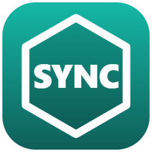
Rustzor.Browser.BackgroundSync: the browser's BackgroundSync API for C# on Rustzor (RustNetRuntime in WebAssembly).
dotnet add package Rustzor.Browser.BackgroundSync --version 0.1.0-preview.1rustzor add sync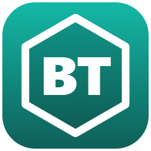
Rustzor.Browser.Bluetooth: the browser's Bluetooth API for C# on Rustzor (RustNetRuntime in WebAssembly).
dotnet add package Rustzor.Browser.Bluetooth --version 0.1.0-preview.1rustzor add bluetooth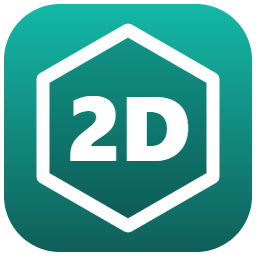
Rustzor.Browser.Canvas: the browser's Canvas API for C# on Rustzor (RustNetRuntime in WebAssembly).
dotnet add package Rustzor.Browser.Canvas --version 0.1.0-preview.1rustzor add canvas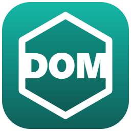
Rustzor.Browser.DOM: the browser's DOM API for C# on Rustzor (RustNetRuntime in WebAssembly).
dotnet add package Rustzor.Browser.DOM --version 0.1.0-preview.1rustzor add domRustzor.Browser.Fetch: the browser's Fetch API for C# on Rustzor (RustNetRuntime in WebAssembly).
dotnet add package Rustzor.Browser.Fetch --version 0.1.0-preview.1rustzor add fetch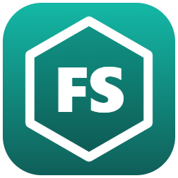
Rustzor.Browser.FileSystem: the browser's FileSystem API for C# on Rustzor (RustNetRuntime in WebAssembly).
dotnet add package Rustzor.Browser.FileSystem --version 0.1.0-preview.1rustzor add files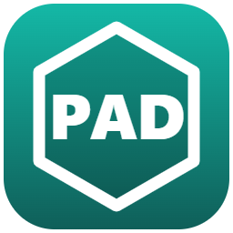
Rustzor.Browser.Gamepad: the browser's Gamepad API for C# on Rustzor (RustNetRuntime in WebAssembly).
dotnet add package Rustzor.Browser.Gamepad --version 0.1.0-preview.1rustzor add gamepad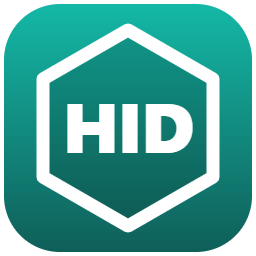
Rustzor.Browser.HID: the browser's HID API for C# on Rustzor (RustNetRuntime in WebAssembly).
dotnet add package Rustzor.Browser.HID --version 0.1.0-preview.1rustzor add hid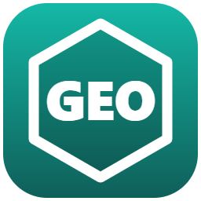
Rustzor.Browser.Location: the browser's Location API for C# on Rustzor (RustNetRuntime in WebAssembly).
dotnet add package Rustzor.Browser.Location --version 0.1.0-preview.1rustzor add location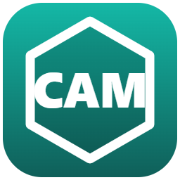
Rustzor.Browser.Media: the browser's Media API for C# on Rustzor (RustNetRuntime in WebAssembly).
dotnet add package Rustzor.Browser.Media --version 0.1.0-preview.1rustzor add media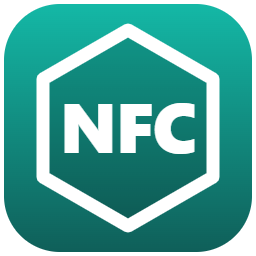
Rustzor.Browser.NFC: the browser's NFC API for C# on Rustzor (RustNetRuntime in WebAssembly).
dotnet add package Rustzor.Browser.NFC --version 0.1.0-preview.1rustzor add nfc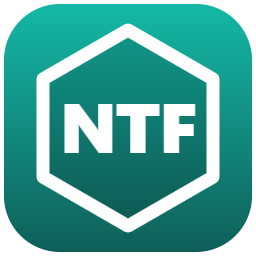
Rustzor.Browser.Notifications: the browser's Notifications API for C# on Rustzor (RustNetRuntime in WebAssembly).
dotnet add package Rustzor.Browser.Notifications --version 0.1.0-preview.1rustzor add notifications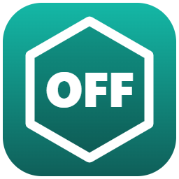
Rustzor.Browser.OffscreenCanvas: the browser's OffscreenCanvas API for C# on Rustzor (RustNetRuntime in WebAssembly).
dotnet add package Rustzor.Browser.OffscreenCanvas --version 0.1.0-preview.1rustzor add offscreen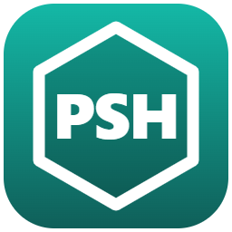
Rustzor.Browser.Push: the browser's Push API for C# on Rustzor (RustNetRuntime in WebAssembly).
dotnet add package Rustzor.Browser.Push --version 0.1.0-preview.1rustzor add push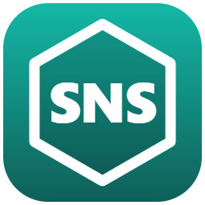
Rustzor.Browser.Sensors: the browser's Sensors API for C# on Rustzor (RustNetRuntime in WebAssembly).
dotnet add package Rustzor.Browser.Sensors --version 0.1.0-preview.1rustzor add sensors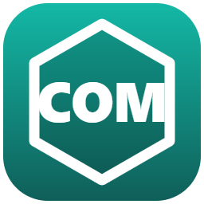
Rustzor.Browser.Serial: the browser's Serial API for C# on Rustzor (RustNetRuntime in WebAssembly).
dotnet add package Rustzor.Browser.Serial --version 0.1.0-preview.1rustzor add serial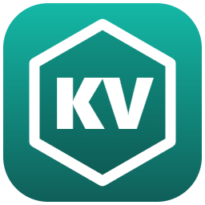
Rustzor.Browser.Storage: the browser's Storage API for C# on Rustzor (RustNetRuntime in WebAssembly).
dotnet add package Rustzor.Browser.Storage --version 0.1.0-preview.1rustzor add storage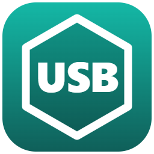
Rustzor.Browser.USB: the browser's USB API for C# on Rustzor (RustNetRuntime in WebAssembly).
dotnet add package Rustzor.Browser.USB --version 0.1.0-preview.1rustzor add usbRustzor.Browser.Video: the browser's Video API for C# on Rustzor (RustNetRuntime in WebAssembly).
dotnet add package Rustzor.Browser.Video --version 0.1.0-preview.1rustzor add video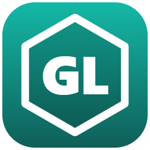
Rustzor.Browser.WebGL: the browser's WebGL API for C# on Rustzor (RustNetRuntime in WebAssembly).
dotnet add package Rustzor.Browser.WebGL --version 0.1.0-preview.1rustzor add webglRustzor.Browser.WebGPU: the browser's WebGPU API for C# on Rustzor (RustNetRuntime in WebAssembly).
dotnet add package Rustzor.Browser.WebGPU --version 0.1.0-preview.1rustzor add webgpu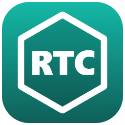
Rustzor.Browser.WebRTC: the browser's WebRTC API for C# on Rustzor (RustNetRuntime in WebAssembly).
dotnet add package Rustzor.Browser.WebRTC --version 0.1.0-preview.1rustzor add webrtc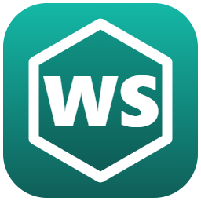
Rustzor.Browser.WebSocket: the browser's WebSocket API for C# on Rustzor (RustNetRuntime in WebAssembly).
dotnet add package Rustzor.Browser.WebSocket --version 0.1.0-preview.1rustzor add websocket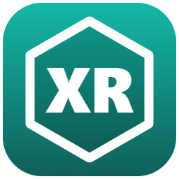
Rustzor.Browser.WebXR: the browser's WebXR API for C# on Rustzor (RustNetRuntime in WebAssembly).
dotnet add package Rustzor.Browser.WebXR --version 0.1.0-preview.1rustzor add webxr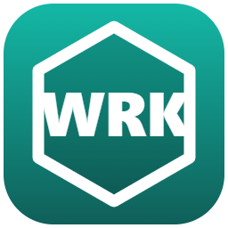
Rustzor.Browser.Workers: the browser's Workers API for C# on Rustzor (RustNetRuntime in WebAssembly).
dotnet add package Rustzor.Browser.Workers --version 0.1.0-preview.1rustzor add workersData, games, graphics and AI on top of the browser APIs.
Rustzor.AI: AI for Rustzor apps. Streaming chat with OpenAI, Azure OpenAI, Anthropic Claude, Ollama and any OpenAI-compatible endpoint; embeddings; an in-memory vector store and a retrieval-augmented generation pipeline; and local inference in the browser with transformers.js or Chrome's built-in model.
dotnet add package Rustzor.AI --version 0.1.0-preview.1rustzor add aiRustzor.Data: data in the browser for Rustzor. Typed IndexedDB object stores, SQLite (sql.js) with persistence, and DuckDB WASM for analytics over CSV, Parquet and JSON — all from C#.
dotnet add package Rustzor.Data --version 0.1.0-preview.1rustzor add dataRustzor.Game: a 2D game framework for Rustzor. Entity-component-system world, fixed-step game loop, keyboard/pointer/gamepad input, 2D physics with collisions, tweens, cameras, sound effects and multiplayer sessions over WebSocket or BroadcastChannel.
dotnet add package Rustzor.Game --version 0.1.0-preview.1rustzor add game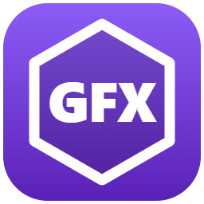
Rustzor.Graphics: graphics for Rustzor. A retained 2D scene graph with pan/zoom, hit testing, selection, SVG and JSON export on Canvas; RGBA pixel operations for image editing; and a WebGL 3D renderer with primitives, OBJ loading, orbit camera and picking.
dotnet add package Rustzor.Graphics --version 0.1.0-preview.1rustzor add graphicsEstablished JavaScript UI and chart libraries, driven from C#.
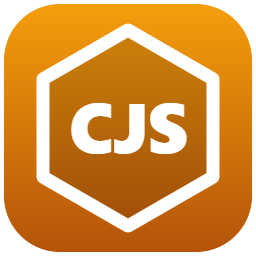
Rustzor.Charts.ChartJs: Chart.js 4 charts (line, bar, pie, doughnut, radar, polar area, scatter, bubble) as Razor components for Rustzor, themed for light and dark.
dotnet add package Rustzor.Charts.ChartJs --version 0.1.0-preview.1rustzor add chartjs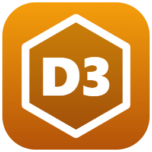
Rustzor.Charts.D3: D3.js 7 visualisations for Rustzor — bar, line, pie, force-directed graph and treemap components fed from C#, plus D3Script for your own D3 code.
dotnet add package Rustzor.Charts.D3 --version 0.1.0-preview.1rustzor add d3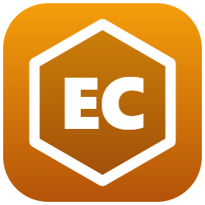
Rustzor.Charts.ECharts: Apache ECharts 5 for Rustzor. Pass any ECharts option from C# (anonymous objects work) or build common charts with EChartOption helpers.
dotnet add package Rustzor.Charts.ECharts --version 0.1.0-preview.1rustzor add echarts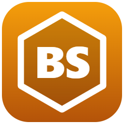
Rustzor.UI.Bootstrap: Bootstrap 5.3 for Rustzor. Buttons, cards, alerts, modals, tabs, accordions, dropdowns, tables, pagination, toasts and form inputs as Razor components whose state lives in C#, so Bootstrap's own JavaScript is not needed.
dotnet add package Rustzor.UI.Bootstrap --version 0.1.0-preview.1rustzor add bootstrapRustzor.UI.Mui: Material UI 5 for Rustzor. Typed Razor wrappers (buttons, text fields, selects, switches, sliders, tabs, chips, alerts, cards, app bars, progress) plus MuiIsland for any MUI component, rendered with React 18 and themed with the Rustzor palette in light and dark mode. Razor content can be nested inside MUI components.
dotnet add package Rustzor.UI.Mui --version 0.1.0-preview.1rustzor add mui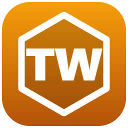
Rustzor.UI.Tailwind: Tailwind CSS 3.4 for Rustzor. The in-browser compiler picks up any utility class your Razor markup renders, a Tw class helper builds conditional class lists, and a set of ready-made components (buttons, cards, inputs, tabs, modals, tables, stats) gets you started.
dotnet add package Rustzor.UI.Tailwind --version 0.1.0-preview.1rustzor add tailwindReal-time and RPC clients for ASP.NET Core back ends.
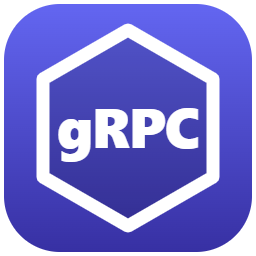
Rustzor.Net.GrpcWeb: gRPC-Web calls (unary and server streaming) with a small protobuf reader and writer, for C# on Rustzor (RustNetRuntime in WebAssembly).
dotnet add package Rustzor.Net.GrpcWeb --version 0.1.0-preview.1rustzor add grpc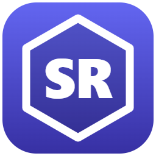
Rustzor.Net.SignalR: an ASP.NET Core SignalR client (JSON hub protocol over WebSockets) for C# on Rustzor (RustNetRuntime in WebAssembly).
dotnet add package Rustzor.Net.SignalR --version 0.1.0-preview.1rustzor add signalrNo package matches. Try a browser API name such as “bluetooth”, or a library such as “echarts”.